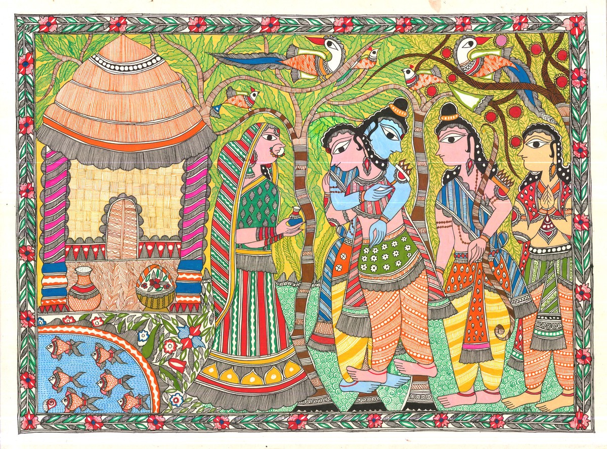
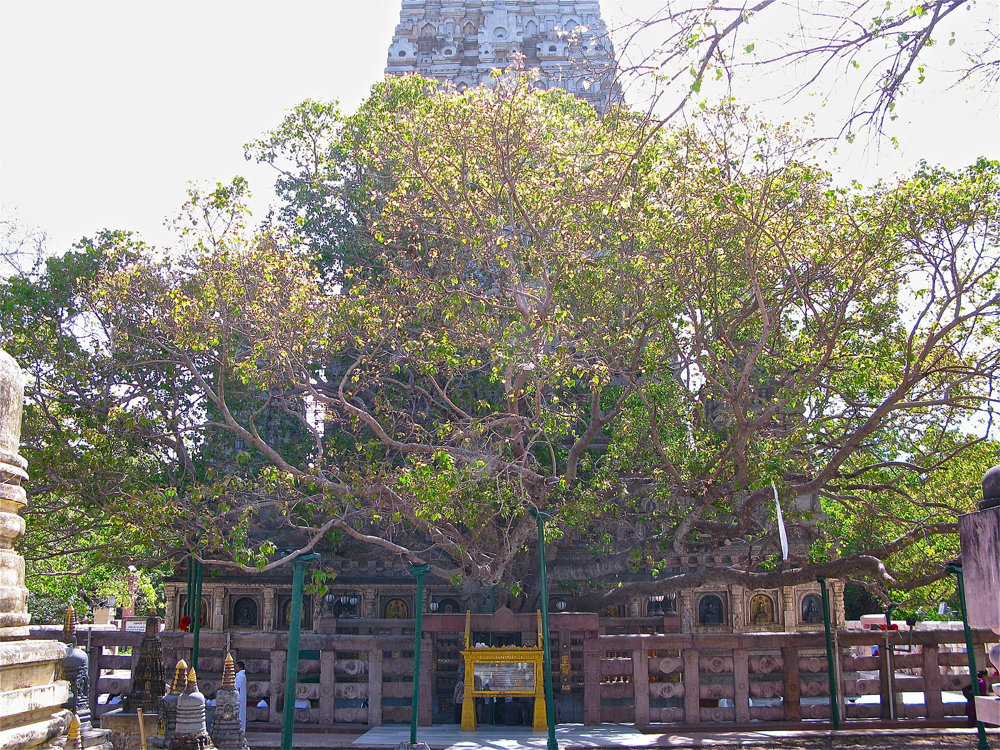
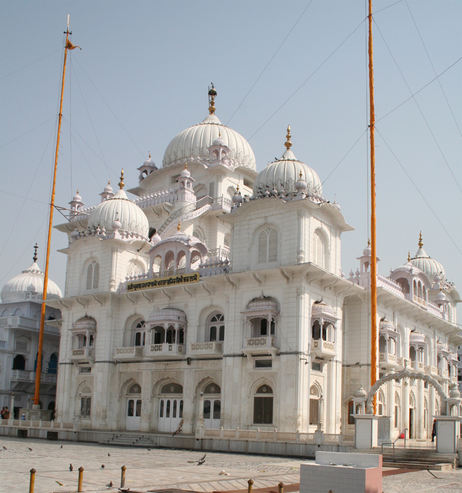
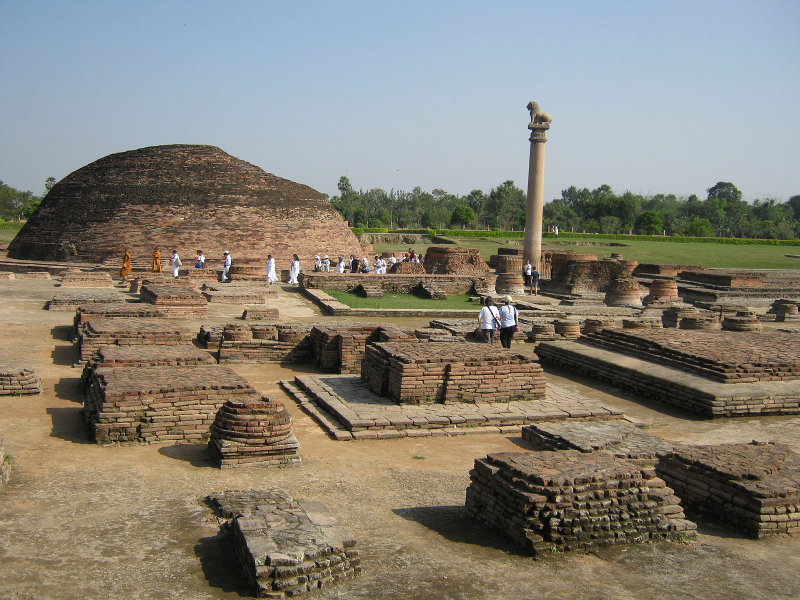
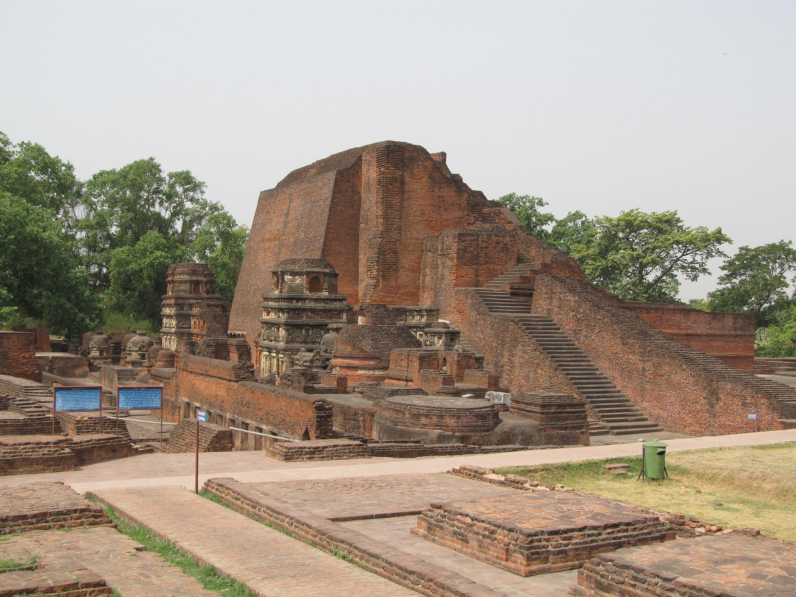

History of Bihar
History of Bihar can be categorized into three phases: Ancient History, Medieval History and Modern History.
Ancient History
The history of Bihar dates back to the very dawn of human civilization and legends of Hinduism, the Sanatana (Eternal) Dharma, can be traced to the land of Bihar.
A Significant place in Ramayana
According to Ramayana, Sita, the consort of Lord Rama, was a princess of Bihar. She was the daughter of King Janak of Videha, the present districts of Sitamarhi, Muzaffarpur, Samastipur, Madhubani and Darbhanga, in north-central Bihar mark this ancient kingdom.
According to legends, the birthplace of Sita is Punaura, which is located on the west of Sitamarhi town and Janakpur, the capital of King Janak and the place where Lord Rama and Sita were married, lies just across the border in Nepal.
Maharishi Valmiki, author of Hindu epic 'Ramayana', is also said to have lived in Bihar in a place currently known as Valmikinagar, a small town in the district of West Champaran.

Ramayana depicted in Mithila Painting
Birthplace of the great religion of Buddhism and Jainism
It was in Bodh Gaya, a town in central Bihar, where Prince Gautam attained enlightenment under Mahabodhi Tree, became the Buddha and the great religion of Buddhism was born. Also, it was in Bihar that Lord Mahavira, the founder of another great religion, Jainism, was born and attained nirvana (death). The place where Lord Mahavira attained Nirwana is located at the present town of Pawapuri, not far away from Patna, the capital city.

Mahabodhi Tree at Bodh Gaya
An important site for Sikhism
The tenth and last Guru of the Sikhs, Guru Gobind Singh Ji Maharaj was born in Bihar. A lovely and majestic Gurudwara, Takhat Shri Harmandir Ji Saheb, located in eastern Patna, was built to commemorate his memory. Reverentially known as the Patna Sahib, it is one of the five holiest places of worship (Takhat) of Sikhs.

Takhat Shri Harmandir Ji Saheb
Earliest formulator of Modern Economy
The ancient kingdoms of Magadh and of Licchavis, around about 7-8th century B.C., produced rulers and nobles who devised a system of administration that truly is progenitor of modern science of statecraft. Kautilya, the authored of Arthashastra, who author treatise in the science of statecraft, economic policy, and military strategy, lived in Bihar. Also known as Chanakya, he was the teacher, guardian, and adviser of the Magadh king, Chandragupta Maurya.
As an emissary of Chandragupta Maurya, Chanakya travelled far and wide in pursuit of promoting the interests of the State and dealing with the Greek invaders, settled in the northwest of India, along the Indus valley. He not only succeeded in preventing the further onslaught of the Greeks but brought an amicable co-existence between the Greeks and the Mauryan Empire.
Megasthenes, an emissary of Alexander's General, Seleucus Necator, lived in Pataliputra (ancient name of Patna, the Mauryan capital) around 302 B.C. He left behind a chronicle of life in and around Patliputra. This is the first recorded account by a foreign traveller in India. It describes in vivid terms the grandeur of life in Patliputra, a city established by King Ajatshatru, in around 5th Century B.C., at the confluence of the rivers Sone and Ganga.
Another Mauryan king, Ashok, (also known as Priyadarshi or Priyadassi), around 270 B.C., was the first to formulate firm tenets for the governance. He had these tenets, popularly known as Edicts of Ashok, inscribed on stone pillars which were erected across his kingdom. The pillars were crowned with the statue of one or more lions sitting on top of a pedestal which was inscribed with symbols of wheels. The lion symbolises strength, the wheel symbolises the eternal (endless) nature of truth (dharma), hence the name Dharma (or Dhamma) Chakra. This figure of lions, atop a pedestal, with inscription of a wheel, was adopted as the Official Seal of the independent Republic of India (1947). Also, Ashok's dharma chakra was incorporated into the national flag of India, the Indian Tricolor. Remains of a few of these pillars still exist in places such as Lauriya-Nandan Garh in the district of West Champaran and at vaishali, in Vaishali district.
Ashok, a contemporary of Ptolemy and Euclid, was a great conqueror. His empire extended from what is now the North-West Frontier Province (in Pakistan) in the west, to the eastern boundaries of present India in the north, and certainly, up to the Vindhyan Range in the south. Ashok was responsible also for the widespread proselytization of people into Buddhism. He sent his son, Prince Mahendra, and daughter, Sanghamitra, for this purpose to as far south as the present country of Sri Lanka (Sinhal Dweep in ancient times, and Ceylon during the British Empire. Some historians, particularly Sinhalese, consider Mahindra and Sanghmitra as brother and sister.
Ancient Bihar also saw the glorification of women in matters of state affairs. It was here that Amrapali, a courtesan of Vaishali in the kingdom of the Lichhavis, wielded enormous power. It is said that the Lord Buddha, during his visit to Vaishali, refused the invitation of many princes, and chose to have dinner with Amrapali instead. A little-known, but historically and archaeologically documented, event is worth mentioning in this context. After his visit to Amrapali, Lord Buddha continued with his journey towards Kushinagar (also called Kusinara in Buddhist texts.) He travelled along the eastern banks of the river Gandak (also called Narayani, which marks the western border of Champaran, a district now administratively split into two- West and East Champaran.) A band of his devoted Licchavis followers accompanied Lord Buddha in this journey. At a spot known as Kesariya, in the present Purbi (East) Champaran district, Lord Buddha took rest for the night. It was here that he chose to announce to his disciples the news of his impending niravana (death); and implored them to return to Vaishali. The lamenting Licchavi steadfastly refused to leave. Whereupon, Lord Buddha, by creating a 3,000 feet wide stream between them and himself compelled them to leave. As a souvenir he gave them his alms-bowl. The Licchavis, most reluctantly and expressing their sorrow wildly, took leave and built a stupa there to commemorate the event. Lord Buddha had chosen that spot to announce his impending nirvana because, as he told his disciple Anand, he knew that in a previous life he had ruled from that place, namely, Kesariya, as a Chakravarti Raja, Raja Ben. (This is not just a mere legend, myth or folklore. Although, this part of Buddha's life and about the town of Kesariya is little known in India)

Ruins of Vaishali
Pinnacle of Education
At Nalanda, the world's first university of higher learning was established during the Gupta period. It continued as a seat of learning until invaders destroyed and burnt it down. The ruins are a protected monument and a popular tourist spot. A museum and a learning center, The Nava Nalanda Mahavira, is located here.
Nearby, Rajgir, was capital of the Magadh Empire during the reign of Bimbisara. It was frequently visited by Lord Buddha and Lord Mahavira. There are many Buddhist ruins here. It is also well-known for its hot springs with medicinal properties.

Ruins of Nalanda University
Medieval History
The glorious history of Bihar lasted till around the middle of the 7th or 8th century A.D. during the Gupta Period with the conquest of northern India by invaders from the middle east.
In medieval times, Bihar's prestige as the political and cultural center of India faded considerably. Some of the remarkable period in Bihar in medieval times was the rise of Sher Shah, or Sher Khan Sur, an Afghan. Based in Sasaram, which is now headquarter town of Rohtas, Sher Shah was a jagirdar of the Mughal King Babur and was successful in defeating his son Humayun once at Chausa and then at Kannauj (in the present state of Uttar Pradesh) Through his conquest Sher Shah became the ruler of a territory which extended all the way to the Punjab. He was noted as a ferocious warrior and a noble administrator. Several acts of land reform are attributed to him. The remains of a grand mausoleum that he built for himself can be seen in Sasaram (Sher Shah's maqbara.)
Guru Nanak Dev Ji Maharaj visited Patna and stayed at Bhagat Jaitamal's house near Gaighat, Patna in 1509 CE. Later Guru Tegh Bahadur Ji Maharaj came to Patna with his family in 1666. The 10th and the last Guru of Sikhism, Guru Gobind Singh Ji Maharaj was born at Patna Sahib, Patna in 1666. Prince Azim-us-Shan, the grandson of Aurangzeb was appointed as the governor of Pataliputra in 1703. Azim-us-Shan renamed Pataliputra as Azimabad, in 1704.
Battle of Buxar
The Battle of Buxar was fought on 21 October 1764, between the forces under the command of the British East India Company, led by Hector Munro, and the combined armies of Mir Qasim, Nawab of Bengal till 1764; the Nawab of Awadh Shuja-ud-Daula; and the Mughal Emperor Shah Alam II. The battle was fought at Buxar, it was a decisive victory for the British East India Company. The war was brought to an end by the Treaty of Allahabad in 1765.
The British victory at Buxar had "at one fell swoop", disposed of the three main scions of Mughal power in Upper India. Mir Kasim [Qasim] disappeared into an impoverished obscurity. Shah Alam realigned himself with the British, and Shah Shuja [Shuja-ud-Daula] fled west hotly pursued by the victors. The whole Ganges valley lay at the Company's mercy; Shah Shuja eventually surrendered; henceforth Company troops became the powerbrokers throughout Oudh as well as Bihar".
Modern History
During most of British India, Bihar was a part of the Presidency of Bengal, and was governed from Calcutta. A prominent figure that emerged from Bihar during India’s struggle of Independence was Dr. Rajendra Prasad who later became the first President of free India. Dr. Prasad was native of Jiradei in the district of Saran.
Bihar and Orissa separated from Bengal Presidency in 1912 as a single province and later Orissa became a separate province under the Government of India Act of 1935 and thus Bihar became an administrative unit of British India.
At the time of Independence in 1947, the State of Bihar, with the same geographic boundary, formed a part of the Republic of India, until 1956. At that time, in 1956, an area in the south-east, predominantly the district of Purulia, was separated and incorporated into West Bengal as part of the Linguistic Reorganization of Indian States.
Role of Bihar in India’s struggle of Independence
Veer Kunwar Singh
Bihar's contribution in the struggle of freedom dates back to 1857. Babu Kunwar Singh led the Indian Rebellion of 1857 in Bihar. He was nearly eighty and in failing health when he was called upon to take up arms. He gave a good fight and harried British forces for nearly a year and remained invincible until the end. He was an expert in the art of guerilla warfare. His tactics left the British puzzled. Singh assumed command of the soldiers who had revolted at Danapur on 25 July. Two days later he occupied Arrah, the district headquarters. Major Vincent Eyre relieved the town on 3 August, defeated Singh's force and destroyed Jagdishpur. During the rebellion, his army had to cross the Ganges River. Douglas' army began to shoot at their boat. One of the bullets shattered Singh's left wrist. Singh felt that his hand had become useless and that there was the additional risk of infection due to the bullet-shot. He drew his sword and cut off his left hand near the elbow and offered it to the Ganges in his last battle, fought on 23 April 1858, near Jagdispur, the troops under the control of the East India Company were completely routed. On 22 and 23 April, being injured he fought bravely against the British Army and with the help of his army drove away the British Army, brought down the Union Jack from Jagdishpur Fort and hoisted his flag. He returned to his palace on 23 April 1858 and soon died on 26 April 1858.
Champaran Satyagraha
Deshratna Dr. Rajendra Prasad and Bihar Vibhuti Anugrah Narayan Sinha during Mahatma Gandhi's 1917.
Resurgence in the history of Bihar came during the struggle for India's independence. It was from Bihar that Mahatma Gandhi launched his civil-disobedience movement, which ultimately led to India's independence. In 1917, at the persistent request of a farmer named Raj Kumar Shukla from the district of Champaran, Gandhiji took a train ride to Motihari. Here he got to know the plight of the indigo farmers suffering under the oppressive rule of the British. Alarmed at the tumultuous reception of Gandhiji in Champaran, the British authorities served notice on him to leave the Province of Bihar. Gandhiji refused to comply, stating the right of an Indian to freely travel anywhere in his own country. For this act of defiance, he was detained in the district jail at Motihari. From his jail cell, with the help of his friend from South Africa days, C. F. Andrews, Gandhiji managed to send letters to journalists and the Viceroy of India describing what he saw in Champaran and made formal demands for the emancipation of these people. When produced in court, the Magistrate ordered his release on the condition of furnishing bail bond. Gandhiji refused to furnish the bail. Instead, he indicated his preference to remain in jail. Alarmed at the huge response he was receiving from the people of Champaran, the magistrate set him free, without any precondition. This was the first instance of the success of civil disobedience as a tool to win freedom.
After this incident, British for the first time, noticed Gandhiji as a national leader and realized the power of civil disobedience. What Raj Kumar Shukla had started and the massive response people of Champaran gave to Gandhiji, catapulted India’s struggle for free India. Therefore, in 1917, a series of events ignited in a remote corner of Bihar led to the massive movement for independence across the country till India gained freedom in 1947. Therefore, many people from Bihar became leading participants in India's struggle for independence.